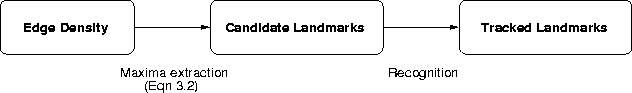

In Chapter 3 we presented the notion of an image-domain landmark as a local maximum of edge density. A landmark represents the basic feature which we employ for localisation, a task which will be accomplished using a characterisation of the landmark's appearance as a function of the camera's position in configuration space. In order to achieve this characterisation, however, the landmark must first be tracked. A qualitative analysis of the results shown in Figure 3.5, however, indicated that landmark candidates do not necessarily correspond precisely from one image to the next. This chapter will explore the problem of tracking in general and present our particular approach to the problem, given the input generated by the landmark detector.
In computational vision, visual tracking is the act of consistently locating a desired feature in each image of an input sequence. The problem is typically complicated by sensor noise, motion in the scene, motion on the part of the observer and real-time constraints. The problem can be further complicated when more than one identical feature must be tracked, in which case it is up to the observer to decide the optimal set of correspondences which are consistent with a priori assumptions about, and recent observations of, the behavioural characteristics of the features [27, 49, 50, 13].
Our technique for landmark tracking operates as follows. Given an initial set of prototypes, that is, observations of a set of unique landmarks, a tracked landmark, is constructed for each prototype. A tracked landmark is constructed by identifying matches to its prototype amongst the set of all observed landmark candidates. In practise, since landmark candidates can demonstrate local variation in position as the camera moves, a local search in the image neighbourhood of a candidate may be required. We will refer to the task of matching a single candidate landmark to a prototype as landmark recognition, and the task of building tracked landmarks as landmark tracking. Figure 4.1 provides an overview of the training process presented thus far; candidate landmarks are detected as local maxima of edge density and then tracked into sets of tracked landmarks. Chapter 3 outlined the process of candidate extraction, while the following sections will present the tasks of landmark recognition and tracking over multiple images.

Figure 4.1: The training process: Candidate
landmarks are detected as local maxima of edge density and then
tracked into sets of tracked landmarks.